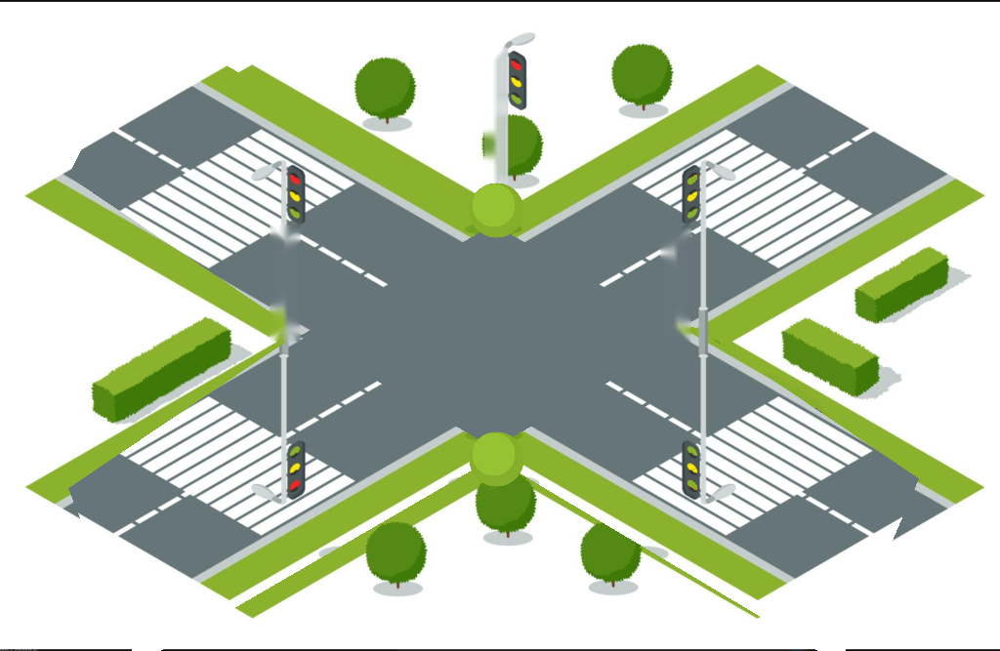

Traditional and Non-Traditional Intersections
Intersections are the highest-risk conflict points on Texas roads. Explore how electronic signal phases, roadway geometry, and circulatory roundabouts govern legal priority.
Controlled Intersections: Signal States
Allows a left turn, but yield to oncoming traffic
Under Texas Transportation Code § 544.007, a flashing yellow arrow indicates a permissive left turn. Oncoming traffic has a steady green light and has unconditional right-of-way. You may cautiously enter the intersection and turn only when there is an adequate, safe gap.
Must yield to all oncoming motor vehicles, cyclists, and pedestrians legally in the crosswalk before turning.
Unlike a solid green arrow (protected turn), oncoming traffic is not stopped by a red signal.
Uncontrolled Intersections



Right-of-Way Assessment
Based on the active configuration, click the vehicle that has the right-of-way:
Non-Traditional: Roundabouts
Hotspot Detail: The Center Island & Circulatory Rules
All vehicles circulate to the right around the central island in a counter-clockwise vortex. Entering traffic must always yield to all circulating vehicles.
Never change lanes within a roundabout. Select your appropriate entry lane prior to entering based on destination signage. Maintain lane discipline until exit.
If an emergency vehicle approaches, continue through and exit the circle before pulling to the right. The mountable truck apron is reserved for large commercial semi-trailers.
Pedestrian Hybrid Beacons & In-Roadway Lights
Pedestrian Hybrid Beacons (HAWK Signals)
Specialized signals activated by pedestrians at midblock crosswalks. Remains dark during free vehicle flow until activated.
In-Roadway Warning Lights (IRWL)
Pavement-embedded amber LED warning fixtures installed across marked crosswalk lines. Activated by automated optical sensors or pushbuttons.